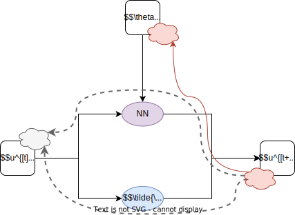

Parallel corrector - Primal
Parallel corrector - Full Adjoint
Parallel corrector - Network Cut
Parallel corrector - Coarse Physics Cut
Parallel corrector - Full BPTT cut

Sequential Corrector - Primal
Sequential Corrector - Full Adjoint
Sequential Corrector - Network Cut
Sequential Corrector - Coarse Physics Cut
Sequential Corrector with bypass - Primal

Sequential Corrector with bypass - Full Adjoint
Sequential Corrector with bypass - Network Cut
Sequential Corrector with bypass - Coarse Physics Cut